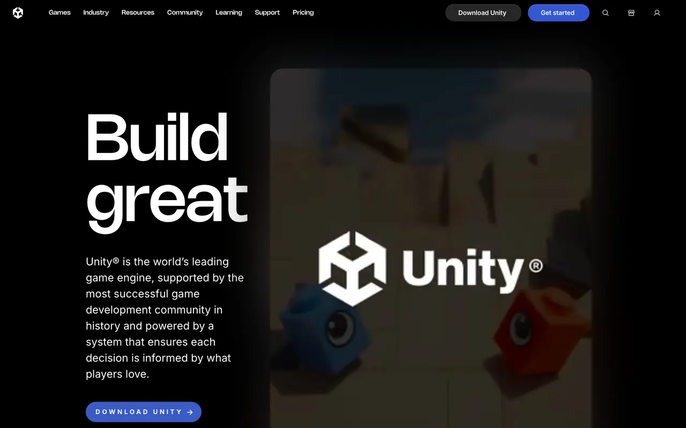
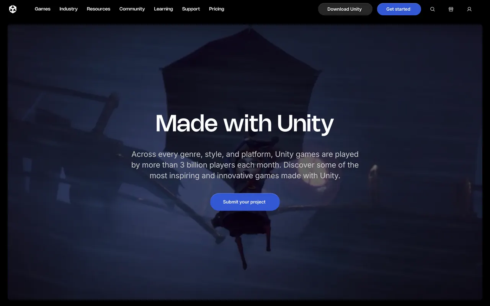

Case study · Enterprise web · Team build
Unity Technologies
Customer-facing web properties for a global game-technology company: product, pricing, campaign, event and showcase experiences, including unity.com and Made with Unity.

Overview
Customer-facing pages for a global company
Unity's customer-facing web properties support global product, pricing, campaign, event and digital experiences. I worked as a frontend engineer on those properties, and also worked across the CMS publishing, QA, redirects, analytics, SEO and releases behind them.
This was team work at a large company. The screenshots are the public pages as they appear live in October 2026, and they reflect the work of many people. What follows is what I personally did, without metrics I cannot share.
Responsibilities
What I did
- Built responsive experiences in React, Next.js, TypeScript, JavaScript, HTML and CSS, on shared design-system patterns.
- Supported server-side rendering and performance-focused frontend implementation in Next.js.
- Shipped updates and campaign launches using Sanity CMS and component-based publishing workflows.
- Managed redirects and URL changes across migrations, campaign launches, content restructuring and production updates.
- Audited 100+ pages for CTA consistency, linking, navigation, usability and implementation quality.
- Applied technical SEO across crawlability, indexing, metadata, internal linking, structured content and site architecture, and supported AEO, GEO and AI discoverability.
- Validated components in Storybook and Chromatic, and documented workflows and QA results in Jira and Confluence.
Challenge
Every change touches everything
On a site like this, a single campaign launch or content restructure is never just a content change. It moves URLs, which affects search; it changes components, which affects performance and accessibility; and it has to be measured afterwards in GA4 and Amplitude. The job is making sure all of that ships together, and nothing breaks quietly.
Process
How a change reached production
Engineering
Where engineering met operations
- Server-side rendering in Next.js for search visibility and page speed.
- Shared design-system patterns, so campaign pages reuse validated components rather than one-off builds.
- Redirect management through migrations and restructures, so search equity and inbound links survive the change.
- Production troubleshooting across DNS, HTTPS, SSL certificates, redirects, caching and web-delivery dependencies.
Showcase
The live pages

Outcome
What I can point to
- Both pages above are live and public.
- 100+ pages audited for CTA consistency, linking, navigation and usability.
- Campaign launches and content updates shipped through Sanity with release QA.
Traffic and conversion figures belong to Unity, so they are not shown here.